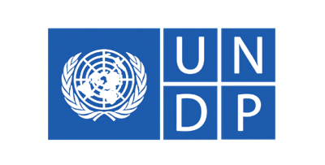
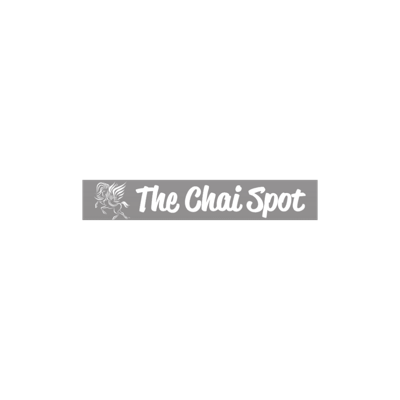
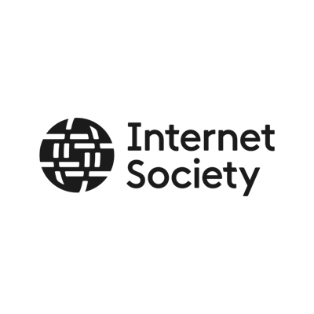
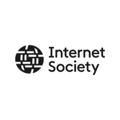
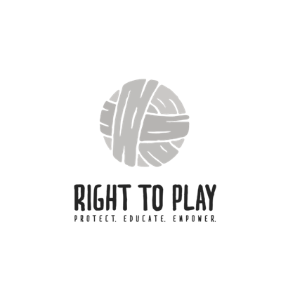
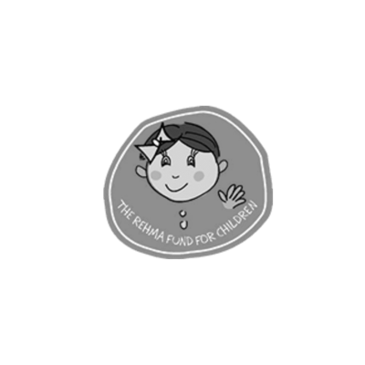

Ahmed Abad Wang · Balochistan · Pakistan
- 0 AI Reach
- 0 Online community
- 0 Scholarships
- 0 Re-enrolled
- 0 Years of Impact
We Are New Generation
One village built 6 initiatives reaching 1M+ learners.
From a single village in Balochistan, WANG built WALI, Urdu AI, WIRE and 3 district programs — proving that grassroots innovation scales.
Your partnership helps fund WALI field camps—each cohort trains dozens of learners in Lasbela.
Public roots since 2012; WALI rural innovation lab established in 2021
Flagship platforms: WALI, Urdu AI, WIRE, and signature district programs in Lasbela
1M+ learners, 1M+ online community, and 7,968+ participants through Urdu AI
Internet Society — WALI Innovation Lab, Balochistan
Trusted by






Our initiatives
Six public-interest initiatives built from rural Pakistan for all of Pakistan.
Each initiative starts from a real community need identified through WALI, WANG's rural innovation lab in Balochistan, and grows into a public system that can serve communities across the country.
WANG Lab of Innovation -- Pakistan's first rural innovation lab in Balochistan. Digital literacy camps, youth pathways, AI workshops, and community programs serving children, girls, women, and first-time learners in Lasbela.
Visit WALIPakistan's largest Urdu-language AI education platform. 800K+ learners, 1M+ online community, 7,968+ participants, 248 trainings, and a national Dost facilitator network spanning 29 districts -- making AI accessible in simple Urdu.
Visit Urdu AIWomen's Innovation and Rural Enterprise is a women-led social enterprise operating under WANG, linking mother-daughter resilience, livelihoods, girls' education, and rural production into one stronger public-interest model.
Visit WIREWANG's adolescent girls and life-skills work creates safe spaces, school-linked learning, and community participation that strengthen rural girls' voice, confidence, and long-term opportunity.
See programsGirls' scholarships, flood recovery, climate leadership, and Las Homes are part of WANG's strongest nonprofit proof: long-running programs in Lasbela with public impact beyond a single product or campaign.
See ImpactPlatforms like PakSpeed and other emerging tools may support the wider WANG ecosystem, but they are not the core institutional story. WANG should be understood first as the nonprofit parent behind the work.
See full hierarchyTrusted by & featured with
Media coverage
WANG's work documented by national and international media.
Clips below are published on WANG's official YouTube channel, including national TV segments and field documentation from WALI, scholarships, climate, and Urdu AI.
Partner feature (Internet Society, third-party channel): Girls in rural Pakistan — internet & inequality.
Aaj News (on @wangorg)
Pakistan–Scottish scholarship — Lasbela
National television coverage archived on WANG's channel.
@wangorg
Digital literacy for girls — WALI
WANG Lab of Innovation fieldwork in Balochistan.
@wangorg
Scholarship scheme 2025
Update on Pakistan–Scottish scholarships for Lasbela students.
@wangorg
Climate resilience — CFLI
Empowering climate resilience with community partners in Lasbela.
@wangorg
16 Days of Activism
Gender-based violence awareness with rural communities.
Work with WANG
A registered non-profit ready for partners, funders, and collaborators.
WANG brings together AI literacy, internet research, women's innovation, school systems, rural digital learning, and community access under one institutional mission. We welcome partners who want credible execution, public proof, and initiatives that grow beyond a single project cycle.
Institutional proof for serious partners
- WANG community work since 2012; registered non-profit institution serving Pakistan today
- WALI, Urdu AI, WIRE, scholarships, and climate programs with measurable outcomes
- 800K+ learners, 1M+ online community, and 207 WALI students reported for 2025
- Based in Ahmed Abad Wang, Bela, Lasbela, Balochistan